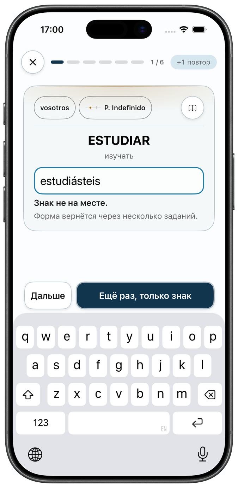

Тренажёр спряжения испанского Испании · iPhone
Видно, где именно ошибка в форме
Пишете форму целиком. Тренажёр называет, где сбой — в основе, окончании или знаке, — показывает правило для этой части и возвращает нетвёрдые формы к повторению.
Год — 7 дней бесплатно · месяц · или «Навсегда», без подписки
comer · Futuro · vosotros
comereis
Нет знака.
comerИнфинитивéisОкончание
Набор.
Пишете форму целиком — без вариантов на выбор. Сбой бывает в одном из трёх мест.
Основа — не та.
tenisteis
tuvisteis
tener · Indefinido
Окончание — не то.
hablastes
hablasteis
hablar · Indefinido
Знак не на месте.
estudiásteis
estudiasteis
estudiar · Indefinido
Разбор.
Правило только для той части, где сбой, — и два образца.
comer + -éis → comeréis
Знак в futuro стоит только на окончании, во всех лицах, кроме nosotros: ударение падает на последний слог. В -emos оно на предпоследнем, и знака нет.
Образцы
hablaréisviviréis

Так это выглядит в приложении
Ошиблись только знаком — поправить нужно только знак. Без очков и упрёков: форма просто вернётся через несколько заданий.
На вашем языке.
Правила написаны отдельно для русскоговорящих и англоговорящих. У каждого языка свои ловушки — вот одна и та же тема.
ImperfectoAyer jugamos — «вчера мы поиграли»: случилось и закончилось, это indefinido. Несовершенный вид подсказывает imperfecto не всегда: «два года я жил в Мадриде» — период закрыт, и это indefinido: viví dos años en Madrid.
ImperfectoEnglish 'played' covers both: 'we played yesterday' is one finished event — ayer jugamos, the indefinido. Where English could say 'used to' or 'was ...ing', Spanish usually takes the imperfecto — and for descriptions too: 'the house was big' — la casa era grande.
Возврат.
Каждая форма — глагол, время, лицо — помнится отдельно. Нетвёрдые возвращаются к повторению.
| yo | hablaré |
|---|---|
| tú | hablarás |
| él, ella, usted | hablará |
| nosotros | hablaremos |
| vosotros | hablaréis |
| ellos, ustedes | hablarán |
Тренируются все лица. vosotros — полноценное лицо со своими окончаниями во всех временах, и здесь его не пропускают.
Вернулись к повторению
- hablaréis
- fuisteis
- dijisteis
- teníais
- haréis
Как платить
7 дней бесплатно. За 2 дня до конца пробы придёт напоминание.
Без пробного периода, отмена в любой момент.
Одна покупка, без подписки. Можно разделить с семьёй через Семейный доступ.
Подписку отменяют в настройках Apple ID в любой момент. Прогресс хранится на iPhone: отмена или смена способа оплаты его не стирают. Цены — в App Store, в валюте вашей страны.
Кому подойдёт
Подойдёт, если
Вы уже знаете, что такое Indefinido и Imperfecto, но формы сбиваются. Учите испанский Испании. Хотите набирать, а не выбирать.
Не подойдёт, если
Вы начинаете с нуля. Нужны разговор или слова. Нужен subjuntivo — его в тренажёре нет. У вас Android.
Вопросы
Можно ли попробовать бесплатно?
Да: у годовой подписки 7 дней бесплатно, за 2 дня до конца придёт напоминание. У месячной пробы нет.
Чем подписка отличается от «Навсегда»?
Подписка на месяц или год продлевается сама, пока её не отмените; она личная. «Навсегда» — одна покупка, её можно разделить с семьёй.
Как отменить подписку?
В настройках Apple ID, в любой момент.
Что будет с прогрессом, если подписка закончится?
Он останется на iPhone. Закроется только тренировка платных времён.
Тренируются только формы vosotros?
Нет, все лица: yo, tú, él, ella, usted, nosotros, vosotros, ellos, ustedes.
Подойдёт, если я учу латиноамериканский испанский?
Формы yo, tú, él, nosotros, ellos — общие. vosotros там не используют, а в тренажёре он есть.
Какие времена есть в тренажёре?
Pretérito Indefinido, Pretérito Imperfecto, Pretérito Perfecto, Pretérito Pluscuamperfecto, Futuro Simple. Subjuntivo и Condicional в тренажёре нет.
На каком языке объяснения?
Интерфейс и правила — на русском и на английском. Объяснения написаны отдельно для каждого языка, с опорой на него.
Как набирать знаки?
Нажмите гласную — над ней встанет знак.
Нужен ли интернет?
Нет, занятия идут без сети.
Какой нужен iPhone?
iPhone с iOS 26 или новее.
Vosotros — для тех, кто учит испанский Испании.
Год — 7 дней бесплатно · месяц · «Навсегда»